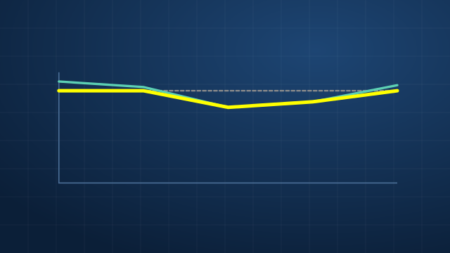
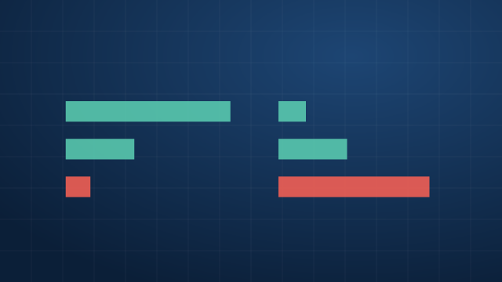
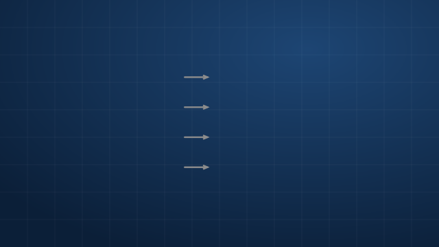
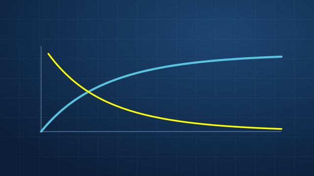
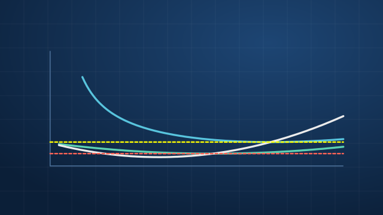

Home › Prerequisites
50 concepts, freePrerequisites, from first principles
Financial statement analysis and economics sit underneath every level of the CFA Program: Level I teaches them, Level II applies them to valuation, and Level III assumes you can use them without being reminded. These are the ideas from both areas that come up again and again, one short page each: what the idea is, why it has to be true, a diagram, a worked example and the traps examiners like.
Financial Statement Analysis
Introduction to financial reporting
 Concept 012 min read
Concept 012 min readWhat financial reporting is for
Financial statements exist to help investors and lenders decide whether to provide capital. Everything else in accounting follows from that purpose.
Introduction to financial reporting Concept 022 min read
Concept 022 min readHow the three financial statements connect
The income statement, balance sheet and cash flow statement are three views of one set of transactions. Change one, and the others must move.
Introduction to financial reporting Concept 032 min read
Concept 032 min readAccrual accounting: when revenue and expenses count
Revenue is recorded when it is earned and expenses when they are incurred, not when cash moves. The gaps between the two become balance sheet items.
Introduction to financial reportingIncome statements
 Concept 042 min read
Concept 042 min readRevenue recognition in five steps
Revenue is recognised when a promised good or service is delivered to the customer, at the price allocated to that promise.
Income statements Concept 052 min read
Concept 052 min readDoubtful accounts and warranties: expenses we have to estimate
Some costs of a sale only appear later, such as customers who never pay or products that need repair. Matching requires estimating them now.
Income statements Concept 062 min read
Concept 062 min readDepreciation methods and why they matter
Depreciation spreads the cost of a long-lived asset over the years it helps earn revenue. The method changes the timing of profit, never the total.
Income statements Concept 072 min read
Concept 072 min readNon-recurring and non-operating items
Analysts forecast what will happen again. The income statement's layers separate the repeatable core from one-offs and from businesses being sold.
Income statements Concept 082 min read
Concept 082 min readCommon-size analysis
Divide every line by revenue (or by total assets) and companies of any size become comparable.
Income statements Concept 092 min read
Concept 092 min readComprehensive income and OCI
Some gains and losses skip the income statement and go straight to equity. Total comprehensive income captures every change in equity not caused by owners.
Income statementsBalance sheets
 Concept 102 min read
Concept 102 min readThe balance sheet: current and non-current
Classifying assets and liabilities by timing shows whether a company can pay what it owes soon with what it will have soon.
Balance sheets Concept 112 min read
Concept 112 min readEquity: what it is made of and how it changes
Equity is the owners' residual claim. Its components show where it came from: money paid in, profits kept, and gains parked in reserves.
Balance sheetsCash flow statements
 Concept 122 min read
Concept 122 min readClassifying cash flows: operating, investing, financing
Cash flows are sorted by the activity that caused them. IFRS gives companies choices for interest and dividends; US GAAP does not.
Cash flow statements Concept 132 min read
Concept 132 min readThe indirect method: from net income to operating cash
Most companies report operating cash flow by starting from net income and undoing everything that was not cash. Each adjustment has a simple logic.
Cash flow statementsInventories
 Concept 142 min read
Concept 142 min readWhat goes into the cost of inventory
Inventory carries every cost needed to get goods ready for sale. Anything else is an expense of the period.
Inventories Concept 152 min read
Concept 152 min readFIFO, LIFO and weighted average cost
When identical units were bought at different prices, the cost-flow method decides which price goes to cost of sales and which stays in inventory.
InventoriesConcept 162 min readThe LIFO reserve and converting LIFO to FIFO
US companies using LIFO disclose how much higher their inventory would be under FIFO. That one number lets you restate them for comparison.
Inventories
Concept 172 min readInventory write-downs
Inventory cannot be carried above what it will fetch. When value falls below cost, it is written down, and IFRS and US GAAP differ on whether it can come back.
Inventories Concept 182 min read
Concept 182 min readInventory ratios: turnover and days on hand
How quickly inventory sells says a lot about demand and management. Two ratios measure it, and both depend on the cost-flow method.
InventoriesLong-lived assets
 Concept 192 min read
Concept 192 min readCapitalise or expense?
Spending that benefits future years is capitalised as an asset and depreciated. The choice moves profit between years, and moves cash flow between activities.
Long-lived assets Concept 202 min read
Concept 202 min readCost model, revaluation model and investment property
Under IFRS, companies can carry property, plant and equipment at fair value instead of depreciated cost. Where the gains go depends on direction and history.
Long-lived assetsIncome taxes
 Concept 212 min read
Concept 212 min readDeferred tax: tax base and temporary differences
Companies keep two sets of rules, one for the accounts and one for the tax authority. Deferred tax records the tax effect of differences that will reverse.
Income taxes Concept 222 min read
Concept 222 min readTax rate changes and the valuation allowance
Deferred taxes are measured at the rate expected when they reverse, and deferred tax assets only count if future profits will absorb them.
Income taxesNon-current liabilities
 Concept 232 min read
Concept 232 min readBonds payable and the effective interest method
A bond is recorded at what investors paid for it. Interest expense is the market rate at issue times the carrying amount, and the gap with the coupon walks the carrying amount to face value.
Non-current liabilities Concept 242 min read
Concept 242 min readRepaying debt early: derecognition
When a company buys back its bonds before maturity, any gap between what it pays and the book value is a gain or loss in profit.
Non-current liabilitiesApplications of financial statement analysis

Concept 252 min readCredit analysis with financial statements
Lenders ask two questions: can the borrower pay interest from its earnings, and how much debt is it carrying relative to what it generates? Two kinds of ratio answer them.
Applications of financial statement analysis
Concept 262 min readAnalyst adjustments for comparability
Reported numbers follow each company's choices and standards. Before comparing companies, put them on the same basis.
Applications of financial statement analysisEconomics
Demand and supply analysis
 Concept 272 min read
Concept 272 min readPrice elasticity of demand and total revenue
Elasticity measures how strongly buyers react to a price change. It decides whether a price rise raises or lowers a seller's revenue.
Demand and supply analysis Concept 282 min read
Concept 282 min readIncome and cross-price elasticity
How demand reacts to income separates luxuries, necessities and inferior goods. How it reacts to another good's price separates substitutes from complements.
Demand and supply analysis Concept 292 min read
Concept 292 min readSubstitution and income effects
A price change does two things at once: it makes a good relatively cheaper, and it changes how rich the buyer feels. Separating them explains odd demand behaviour.
Demand and supply analysis
Concept 302 min readMarginal returns and productivity
With some inputs fixed, adding more of a variable input eventually adds less and less output. That single fact shapes every cost curve.
Demand and supply analysis Concept 312 min read
Concept 312 min readShort-run costs: fixed, variable and marginal
Costs split into those that change with output and those that do not. Marginal cost, the cost of one more unit, drives every decision.
Demand and supply analysis
Concept 322 min readProfit maximisation, breakeven and shutdown
A firm maximises profit where marginal revenue equals marginal cost. Whether it should keep operating at a loss depends on covering variable costs.
Demand and supply analysisThe firm and market organisation
 Concept 332 min read
Concept 332 min readThe four market structures
How many sellers there are, how different their products are and how hard it is to enter determine how much power a firm has over its price.
The firm and market organisation Concept 342 min read
Concept 342 min readPerfect competition in the long run
When anyone can enter and every product is the same, profits attract rivals until prices fall to the lowest average cost. Economic profit is competed away.
The firm and market organisation Concept 352 min read
Concept 352 min readMonopoly pricing
A monopolist faces the whole downward-sloping market demand, so selling one more unit means cutting the price on all of them. It sells less, at a higher price.
The firm and market organisation Concept 362 min read
Concept 362 min readConsumer surplus and price discrimination
Most buyers would pay more than the market price. Firms that can charge different buyers different prices turn that surplus into revenue.
The firm and market organisationAggregate output, prices and economic growth
 Concept 372 min read
Concept 372 min readGDP: measuring an economy's output
GDP is the market value of all final goods and services produced in a country in a period. Spending, income and output are three ways to measure the same thing.
Aggregate output, prices and economic growth Concept 382 min read
Concept 382 min readSaving, investment, the fiscal balance and trade
A rearrangement of the GDP identity shows that a country's saving, its government budget and its trade balance are tied together.
Aggregate output, prices and economic growth Concept 392 min read
Concept 392 min readAggregate demand and aggregate supply
The AD–AS model explains how the whole economy's output and price level respond to shocks, and why the short run differs from the long run.
Aggregate output, prices and economic growth Concept 402 min read
Concept 402 min readEconomic growth and its sources
Long-run growth comes from more labour, more capital and better technology. Because capital has diminishing returns, sustained growth in living standards depends on technology.
Aggregate output, prices and economic growthBusiness cycles
 Concept 412 min read
Concept 412 min readThe business cycle and how sectors behave in it
Economies expand and contract around their long-run trend. Consumers, housing and trade each move through the cycle in recognisable ways.
Business cycles Concept 422 min read
Concept 422 min readUnemployment and the labour market
Not all unemployment is a sign of weakness. Separating frictional, structural and cyclical unemployment shows how much slack the economy really has.
Business cycles Concept 432 min read
Concept 432 min readInflation and price indexes
Inflation is a sustained rise in the general price level. How it is measured, and how deflation, disinflation and hyperinflation differ.
Business cyclesMonetary and fiscal policy
 Concept 442 min read
Concept 442 min readMoney and how banks create it
Money is whatever works as a medium of exchange, a unit of account and a store of value. Most of it is created by banks when they lend.
Monetary and fiscal policy Concept 452 min read
Concept 452 min readThe quantity theory, the Fisher effect and the costs of inflation
Over long periods, faster money growth means higher inflation, and higher expected inflation means higher nominal interest rates.
Monetary and fiscal policyInternational trade and capital flows
 Concept 462 min read
Concept 462 min readComparative advantage and the gains from trade
Countries gain from trade by specialising in what they give up least to produce, even if another country is better at everything.
International trade and capital flows Concept 472 min read
Concept 472 min readRicardian and Heckscher–Ohlin trade models
Comparative advantage comes either from differences in technology (Ricardo) or from differences in endowments of capital and labour (Heckscher–Ohlin), and the second predicts who wins and loses.
International trade and capital flows Concept 482 min read
Concept 482 min readThe balance of payments
Every cross-border transaction is recorded twice. A country that buys more from the world than it sells must finance the gap by selling assets or borrowing abroad.
International trade and capital flowsCurrency exchange rates
 Concept 492 min read
Concept 492 min readExchange rates: quotes and real exchange rates
An exchange rate is the price of one currency in another. What matters for trade is the real exchange rate, which adjusts for prices in each country.
Currency exchange rates Concept 502 min read
Concept 502 min readExchange rates and the trade balance: elasticities and absorption
A weaker currency improves the trade balance only if trade volumes respond enough (elasticities), and only if the country cuts spending relative to income (absorption).
Currency exchange rates